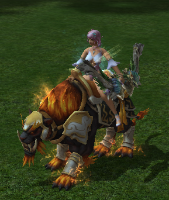
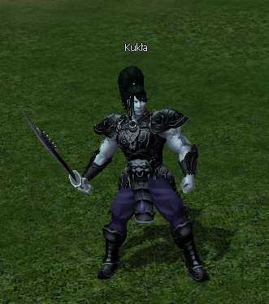
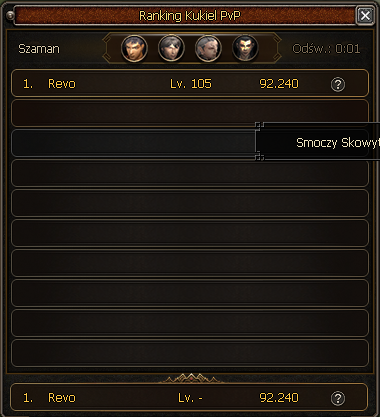
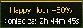

Patch notes
Opis aktualizacji v12
Balans postaci
Przebudowa logiki PvP
W tej aktualizacji całkowicie przepisaliśmy logikę PvP oraz przywróciliśmy klasom ich domyślne wartości bazowe. Zmiana porządkuje fundament balansu i daje nam znacznie większą kontrolę nad przyszłymi korektami postaci.
Precyzyjniejsze balansowanie klas
Nowa logika pozwala wzmacniać lub osłabiać wybraną klasę o konkretną wartość procentową. Oznacza to, że jeżeli dana klasa otrzyma wzmocnienie o 5%, jej realna siła wzrośnie właśnie o 5%.
Dzięki temu przyszłe zmiany będą czytelniejsze, łatwiejsze do kontrolowania i bardziej przewidywalne zarówno dla nas, jak i dla graczy śledzących balans PvP.
Poprawki obrażeń
- Poprawiono błąd, przez który strzały Archera nie były obejmowane ogólnym osłabieniem obrażeń z hitów. Od teraz Archer podlega tej samej logice co pozostałe klasy.
- Wyeliminowano problem, przez który po wcześniejszych zmianach hitów część postaci zadawała mniej obrażeń, niż powinna wynikać z założeń balansu.
Trucie Bossów
Poprawiono błąd, przez który Elit. Zjawa oraz Elit. Ognisty Król nadal nie posiadały odporności na truciznę. Po tej zmianie bossowie są już objęci właściwą odpornością i nie można ich zatruć.
Loteria Tygodniowa
Do Loterii Tygodniowej dodaliśmy nowego wierzchowca: Ognistego Tygrysa. Po zdobyciu obdarzy on Was bonusami przez 450 godzin.
Czas trwania wierzchowca upływa wyłącznie wtedy, gdy jest założony.
- Silny przeciwko potworom
- +20%
- Szansa na cios krytyczny
- +15%
- Punkty doświadczenia
- +25%

Kukły Treningowe
Do gry wprowadzono Kukły Treningowe, które pozwalają wygodnie testować obrażenia zadawane przez Wasze postacie. Dzięki nim możecie szybciej sprawdzić realną siłę swojej postaci i porównać efekty zmian w ekwipunku, bonusach lub ustawieniu builda.

Do systemu dodaliśmy również ranking obrażeń. Możecie w nim sprawdzić swój najwyższy wynik oraz rywalizować z innymi graczami w rankingu klasowym.
W przyszłości planujemy rozwinąć ten system o cykliczne edycje rankingu. Gracze osiągający najlepsze wyniki będą mogli otrzymywać unikatowe nagrody, tytuły lub inne wyróżnienia.

Happy Hour
Dodano powiadomienie informujące o aktywnym Happy Hour. Komunikat pojawia się w grze pod minimapą, dzięki czemu łatwiej zauważycie trwające wydarzenie bez konieczności sprawdzania dodatkowych informacji.
